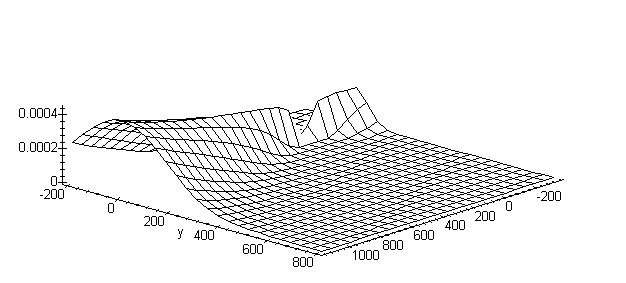

Modeling of soiling atmosphere with using a system Maple
Gurin N.I., Kolesnicov V.L.
Belorussian state technological university, Minsk, Belarus
Full paper in compressed Postscript *.ps.gzSummary
With help of Maples system symbolic conversion building multivariant models of adverse additions dispersion process in nearest bed of atmosphere. Relationship equations between parameters, which define by using conditions of dispersion and using for building model, present in view of functional array elements.
Modeling of atmospheric processes and in accordance with them processes of soiling atmosphere from different sources of bad surges is always multivariable problem. As a rule, for the achievement of acceptable accuracy and оперативности getting the forecas
ting parameters are required significant computing facility. When using only numerical methods of deciding such sort of problems appear restrictions on the choice of value of step of net of changing the source parameters. In this connection it is necessary to use and other approaches to deciding a given problem, in particular, numerically-analytical methods, when on preliminary stages of calculations are in the beginning executed available analytical transformations source accounting molded without the sacrifice of accuracy (with "absolute accuracy"), but then already on the certain stage are connected numerical methods for getting a final deciding a putting problem.In given work by means of symbol transformation systems Maple are conducted consequent analytical transformations of functional dependencies with the complex logical structure for modeling of process of diffusing of bad admixtures in nearest bed of atmosphere. At the building models of sharing a concentration of soiling from the single source on given on sizes of territory (square platform) are taken dependencies account into 12 parameters, from which 2 parameters are coordinates of spot on the territory, but 10 parameters define concrete conditions of diffusing of bad admixtures in atmosphere and in end formulas models will be assigned by corresponding numeric values. Besides, functional dependencies models are built with provision for 10 equations of relationships of different type, which are superimposed on parameters models. Herewith each type of relationships is defined in dependencies from given conditions by different analytical expressions, which for different types of relationships can be from 2 before 4. This brings about that given model has as a whole 18432 variants different analytical formules sufficiently bulky type for nearest bed concentrations of soiling depending on different variants of conditions of diffusing. Actually, certainly, not all variants are used in view of need of choice of only noninconsistent conditions of diffusing.
For instance, under determined noninconsistent choice of conditions get necessary dependency of concentration of bad admixtures from 12 parameters
C(a,rlf,f1,u,v1,tg,tv,h,d,M,x,y) = 4 .615384614*u/(v1*(tg - tv)/h)^(1/3)/(1 + 4.834055021* (v1^2/d^3/h^2/(tg - tv))^(1/2)) / (4.733727808*u^2/(v1*(tg - tv)/h)^(2/3)/(1 + 4.834055021*(v1^2/d^3/h^2/(tg -tv))^(1/2))^2 - 1.538461538*u/(v1*(tg - tv)/h)^(1/3)/(1 + 4.834055021* (v1^2/d^3/h^2 /(tg - tv))^(1/2)) + 2)*a*M*f1/(.67 + 4.028379184*(v1^2/d^3/h^2/(tg - tv))^(1/2) + 3.995451034*(v1^2/d^3/h^2/(tg - tv))^(1/3))*(3 - ((.65*(v1*(tg - tv)/h)^(1/3)-.3)*(4.34 - .65*(v1*(tg - tv)/h)^(1/3)))^(1/2))* rlf / h^2/( v1*( tg - tv))^(1/3)/(.5023547880e-1* x^2/(.4923076922*u/(v1*(tg - tv)/h)^(1/3)/(1 + 4.834055021*(v1^2/d^3/h^2/(tg - tv))^(1/2)) + .68)^2/(5 - f1)^2/(v1*(tg-tv)/h)^(1/3)/(1+3.290371440*(v1^2/d^3/h^2/(tg - tv))^(1/3))^2/h^2 + 1.750661682*x/(.4923076922*u/(v1*(tg -tv)/h)^(1/3)/(1 + 4.834055021*(v1^2/d^3/h^2/(tg-tv))^(1/2)) + .68)/(5-f1)/(v1*(tg - tv)/h)^(1/6)/(1 + 3.290371440*(v1^2/d^3/h^2/(tg - tv))^(1/3))/h - 17.8)/(1 + 8.4*u*y^2/x^2)/(1 + 28.2*u^2*y^4/x^4)
%1:=1+4.834055021*(v1^2/d^3/h^2/(tg-tv))^(1/2)
where: a - a factor climatic conditions;
rlf - a factor, taking relief of terrain into account;
f1 - a factor, taking velocity of settling the contamination into account;
u - an average velocity winds on the accounting azimuth;
v1- a volume of surge an gas mixture;
tg - a temperature an gas mixture;
tv - a temperature of surrounding air;
h - a height of the source of the surge;
d - a diameter mouths of the source of the surge;
M - a power of surge of polluting material;
x, y - coordinates of spot of platform with the source at the beginning of initially coordinates.
When getting a concrete formula deciding problem models by facilities a system Maple lock-and-key moment is that each of 10 equations of relationship between parameters is presented in the manner of 10 corresponding functional arrays by dimensionality from 2 before 4, which elements are analytical expressions, definied by concrete conditions of diffusing. Here it is necessary to note that possibility to keep and use as array elements some analytical expressions is an unique features of computer algebra systems.
After task of numeric values to parameters, which correspond concrete conditions diffusings, from 12 parametric analytical expressions get sharing a concentration of contamination depending on coordinates x, y spots on territory of platform
C1(x,y) = - .42733e-2/(.66394e-6*x^2 + .63652e-2*x -17.8)/(1. + 21.00 *y^2/x^2) /(1. +176.25*y^4/x^4)
System Facilities Maple possible easy build a surface C1(x,y) for the visual analysis of found dependency in the different ways including with the fixing lines of concentrations of soiling that allows operative and in generally accepted terms to value a current situation on distribution of soiling a platform by bad surges, which is defined by given conditions.

Moreover, if assign in models certain sequence for interesting us parameter that allows to conduct a visual analysis of dependency of process of soiling from chosen a parameter models.
Transition to other weather, climatic and etc conditions is reached by the simple choice in the dialogue mode corresponding this conditions of relationships as functional array elements and getting an equation models in the manner of function dependencies for With(a,rlf,f1,u,v1,tg,tv,h,d,M,x,y), but then task for parameters a, rlf, f1, u, v1, tg, tv, h, d, M concrete numeric values and getting a function dependency С1(x,y) for the building of corresponding distribution.
Thereby, possibility of keeping in computer memories of symbol expressions as values some variable computer algebra systems allow on-new to approach to deciding the actual problems, in particular, in the field of modeling of processes of diffusing of bad surges in atmosphere.